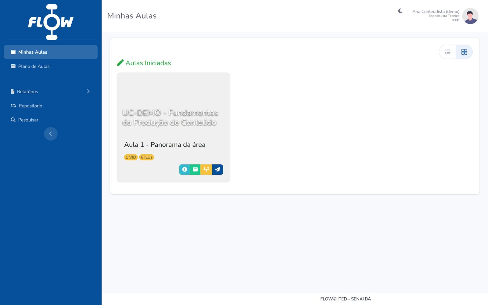
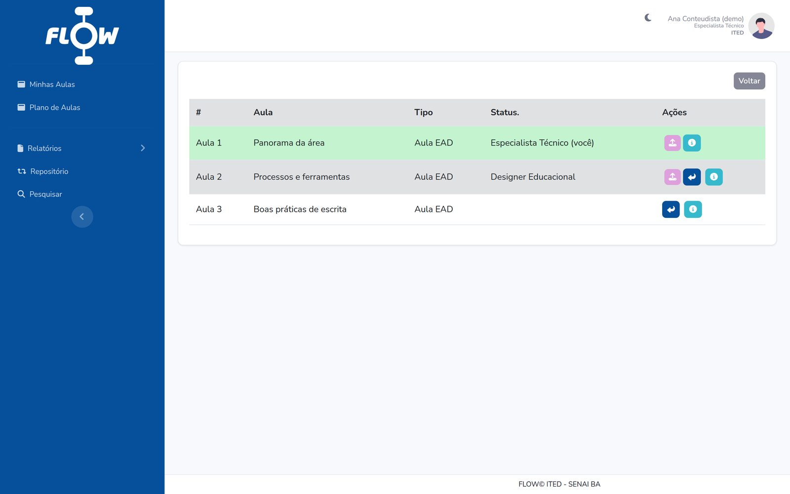
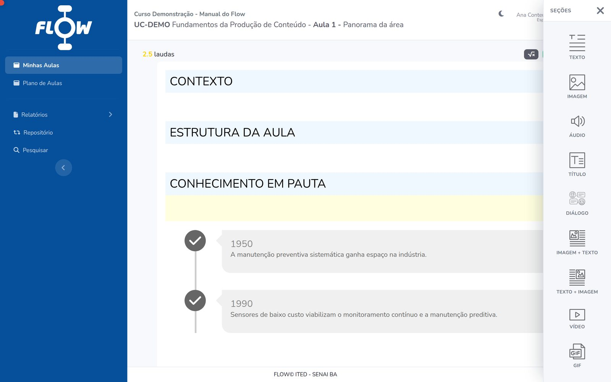

The context
Producing an e-learning lesson involves many people and many hands on the same material: whoever writes the technical content, reviews it technically, designs the learning experience, proofreads it, illustrates it, lays it out, records it, develops it. Without a tool that concentrates that work, each stage happens somewhere else — loose files, parallel versions, reviews over email — and nobody can say with confidence which version of a lesson is the good one, or which stage it is stuck at.
FLOW solves this at SENAI Bahia: it follows a lesson from the lesson plan to final delivery, through every production stage, and hands the result over packaged for the environment where the student will study.
The workflow
Each lesson is a card that travels between user roles. On every hand-off, the sender picks the destination role and the person responsible and leaves a comment — all of it recorded. There is always exactly one active card; the previous ones form the lesson's history.

The lesson editor
A lesson is assembled from sections, inside the structural blocks defined by the project template. There are 28 section types — from plain prose to resources that only exist in digital form.
- Text and structure — prose, heading, direct quotation, code.
- Media — image, audio, video, GIF, image+text, text+image.
- Didactic callouts — Did You Know?, Watch Out, Problem Framing, Historical Context, Thinking Outside the Box, Augmented Reality.
- Interaction — accordion, tabs, flipcards, carousel, timeline, image comparison, custom interactive resource.
- Assessment — single choice, multiple selection and matching, with per-option feedback.
Each section is versioned individually, and whoever specifies media does not attach the final file: they write the brief — the production request — along with the accessibility text. Illustration, video and audio are produced by the downstream teams from that brief.

Beyond the editor
- Per-section comments — collaborative review happens next to the content, not in another channel.
- Repository — search and reuse of content already produced for other courses.
- Reports — daily log, summary, stages per curricular unit, finished items and a Kanban board with the full production picture.
- Checklists and deadlines — what must be ready at each stage, with start and end dates.
- Audit trail — who created, edited, deleted, imported or handed off what.
- Weekly email digest — triggered by cron on Mondays.
- Department scoping — each user only sees the courses of their own department.
AI assistant
FLOW includes a contextual chat about the lesson being edited, built on the OpenAI API. Two design decisions are worth noting:
- Answers arrive over Server-Sent Events, token by token — the author watches the answer form instead of waiting for the whole block.
- The lesson content is not sent with every message. It is stored beforehand as context with a hash and injected only when a new chain has to be opened. If the lesson changes, the hash changes and a new chain starts on its own, already carrying the updated content.
The module has a configurable context ceiling, a per-question limit and a per-user rate limit.
Export
At the end of the workflow, the lesson leaves FLOW in whatever format the destination requires:
- SCORM 1.2
- .zip package built on the course template, ready to publish in the LMS
- single lesson or full curricular unit, with QR code (mPDF)
- DOCX
- Word book (PhpWord)
- IDML
- file for layout in InDesign
The SCORM templates are per-field variations — chemistry, food, biotechnology, renewable energy, mechanical manufacturing, industrial AI, instrumentation, refrigeration — each with its own look and its own exercises. The generated version is recorded on the curricular unit, so it is always clear which package was delivered and when.
FLOW's central gain is making content production faster, more organized and traceable — the three things a process scattered across emails and shared folders loses first.
My role
I develop the platform as a Systems Analyst at SENAI CETIND: modelling the production workflow and the database, the section editor and its versioning, the SCORM, PDF, DOCX and IDML exporters, the reports, and the OpenAI API integration — including the hashed-context design and the SSE streaming.
Stack
- Backend
- PHP 8.2, no framework
- Database
- MySQL / MariaDB
- Frontend
- Bootstrap 4, jQuery, Froala Editor
- AI
- OpenAI API via Guzzle, SSE streaming
- Documents
- mPDF, PhpWord
- E-learning standard
- SCORM 1.2
Related
The SCORM packages that come out of FLOW are published in Moodle environments. The Moodle work — administration, plugins, themes, integrations, reporting and version migration — has a page of its own.